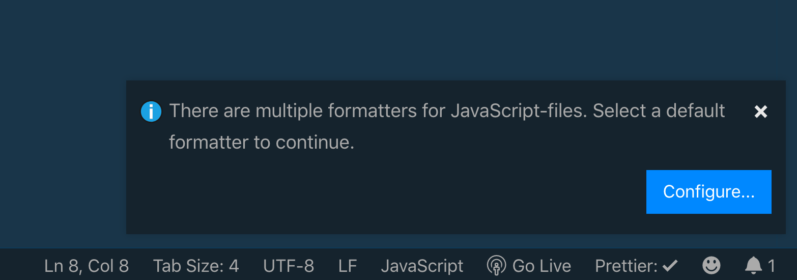

Chắc hẳn khi mọi người viết code đều dùng công cụ mặc định hoặc là dùng thư viện bên ngoài để format code. Trong đó có lẽ Prettier là các bạn dùng nhiều nhất. Bài viết hôm nay, mình sẽ chia sẻ với các bạn cách mình dùng Prettier.

Phần này dành cho những bạn chưa biết, bạn thấy đoạn code dưới đây là code gốc.

Và sau khi chạy, nó sẽ ngay hàng thẳng lối như thế này.

Mình thường code bằng VSCode. Bình thường các bạn có thể dùng công cụ Format
Document được tích hợp sẵn bằng cách bấm tổ hợp
Command + Shift + F (MacOS) hoặc là
Shift + Alt + F (thế giới còn lại).
Nếu bạn thích dùng Prettier thì bạn cứ vào phần Extension,
gõ Prettier và chọn Prettier - Code formatter.
Sau đó nhấn Install.
Trong quá trình sử dụng lần đâu, có thể sẽ xảy ra tranh chấp giữa Formatter mặc định và Prettier. Bạn sẽ được hỏi như hình sau đây.
Sau đó bạn chọn Prettier hay cái khác.

Nếu Visual Studio Code không có hỏi, bạn có thể vào
Settings, gõ Default Formatter và chọn
Default Formatter là ebsenp.prettier-vscode.

Nếu bạn không thích dùng một cấu hình của Prettier cho tất cả project. Bạn
có thể tạo file .prettierrc đặt ở thư mục root của Project. Ví
dụ rule như vậy.
Với cách ở trên, bạn chỉ cấu hình cho 1 loại file nhưng sẽ ảnh hưởng loại khác. Như đoạn code cấu hình trên là dành cho JavaScript, nhưng HTML cũng bị ảnh hưởng theo. Bạn có thể tham khảo ở đây để cấu hình cho 2 loại file khác nhau.
Nếu bạn lười thì có thể trước khi commit, sẽ chạy một lượt bằng cách cấu hình pre-commit hook. Bạn có thể tham khảo ở đây.
Mình thì theo trường phái xài pretty-quick. Đầu tiên, bạn cài
package sau.
yarn add pretty-quick husky --dev
Sau đó, bạn config phần hook ở trong file package.json như sau.
Bạn cứ việc tạo file tên là .prettierignore đặt ở thư mục root
của project là được. Về mặt cú pháp thì nó tương tự .gitignore